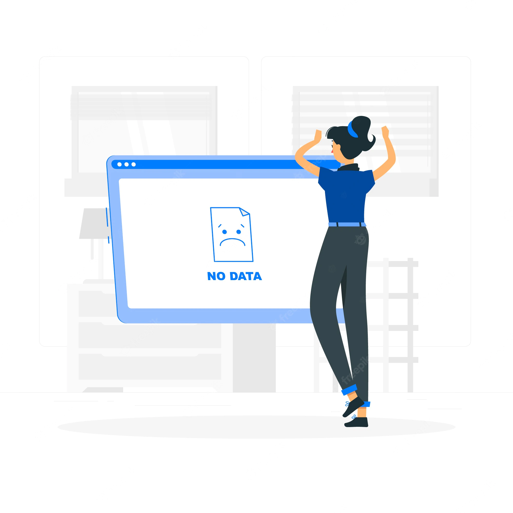

<ion-header class="ion-no-border">
  <ion-toolbar>
    <ion-icon  name="arrow-back-outline" class="back-button" (click)="common.dismiss()" slot="start"></ion-icon>
    <ion-title style="text-align: center;">
      Reset Password
      <!--  -->
    </ion-title>
  </ion-toolbar>
</ion-header>
<ion-content>
  <div style="text-align: center;">
    
    
    <p>Service will be available soon.</p>
  </div>
</ion-content>